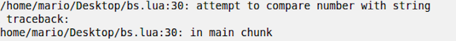

Paradigmas e Conceitos de Lua
Este projeto acadêmico se refere ao desenvolvimento de um estudo e pesquisa, relativo aos paradigmas e conceitos da linguagem de programação Lua.

Presenter Notes
Jogos

Presenter Notes
Simuladores de Engenharia

Presenter Notes
História
- A construção da linguagem veio de um projeto entre a PETROBRAS e a PUC-RIO, a fim de produzir um programa de interfaces gráficas para várias aplicações.

- Surgiram então duas linhas de pesquisa e desenvolvimento.
- Logo surgiu o DEL - Linguagem para Especificação de Diálogos;
- ‘SOL’ - Simple Object Language, uma linguagem para descrição de objetos, inspirada no bibTex e em tabelas de banco de dados.
Presenter Notes
História
- No entanto, DEL e SOL tinha várias limitações;
- As propostas de solução era formular uma nova linguagem de configuração genérica com as seguintes características:
- Facilmente acoplável;
- Portável
- Simples e de sintaxe fácil
- Envolvidos: Roberto Ierusalimschy, Luiz Henrique de Figueiredo e Waldemar Celes;
- As propostas de solução era formular uma nova linguagem de configuração genérica com as seguintes características:

Presenter Notes
História
O resultado desse projeto foi dado o nome LUA, como um contraste da antiga SOL.

Presenter Notes
BNF

Presenter Notes

Presenter Notes
Lua
- A verificação de tipos em Lua é feita em tempo de execução pelo interpretador Lua;


Presenter Notes
Lua
- Lua é uma linguagem com escopo léxico;
- Baseia-se na sequência de chamadas de subprogramas;
- O escopo pode ser determinado em tempo de execução;
- Variáveis locais podem ser livremente acessadas por funções definidas dentro do seu escopo ou bloco;

Presenter Notes
Concatenação
O operador de concatenação de cadeias de caracteres em Lua é denotado por dois pontos (..).
Se ambos os operandos são cadeias de caracteres ou números, então eles são convertidos para cadeias de caracteres.

Presenter Notes
Definições e Chamadas de Função
- Segue a seguir a sintaxe para a definição de uma função:
- funcao ::= function corpodafuncao funcao ::= ( [listapar] ) bloco end;
- Em Lua o comando function f () corpo end é traduzido para f = function () corpo end;

- Uma chamada de funçao da forma return é denominada de chamada final;
- não há limite no número de chamadas finais aninhadas que um programa pode executar.
Presenter Notes
O comando for
- Lua possui duas variações do comando for, sendo uma numérica e outra genérica;
- O for em Lua pode iterar especificamente sobre os elementos de uma tabela Lua de duas formas distintas, utilizando o modelo genérico.